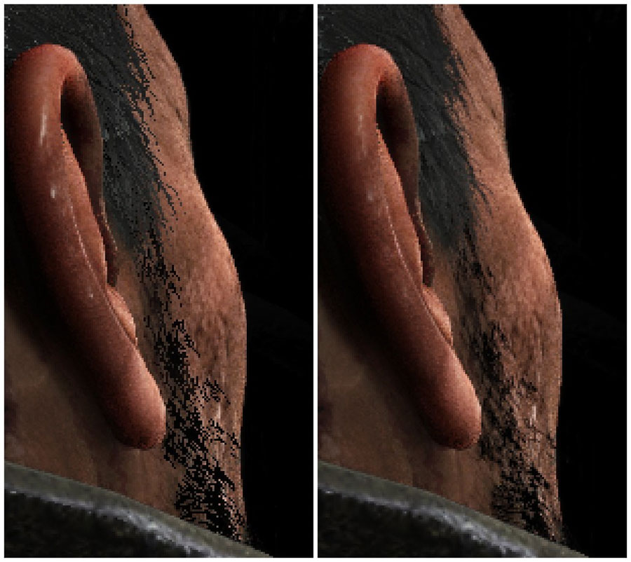

UDN
Search public documentation:
AntiAliasingDX11KR
English Translation
日本語訳
中国翻译
Interested in the Unreal Engine?
Visit the Unreal Technology site.
Looking for jobs and company info?
Check out the Epic games site.
Questions about support via UDN?
Contact the UDN Staff
日本語訳
中国翻译
Interested in the Unreal Engine?
Visit the Unreal Technology site.
Looking for jobs and company info?
Check out the Epic games site.
Questions about support via UDN?
Contact the UDN Staff
DirectX 11 의 앤티 앨리어싱
문서 변경내역: Daniel Wright 작성. 홍성진 번역.
개요
MSAA 켜기
MSAA 에 디퍼드 셰이딩
머티리얼 속성

머티리얼 블렌드 모드 BLEND_DitheredTranslucent (블렌드_디더링된 반투명)은 MSAA 가 켜졌을 때 다양한 머티리얼 기능을 구현합니다. Opacity Mask 가 디더링된 패턴으로 평가되도록 하여, 머티리얼이 실제로는 마스킹되었어도 반투명같아 보이도록 만듭니다.